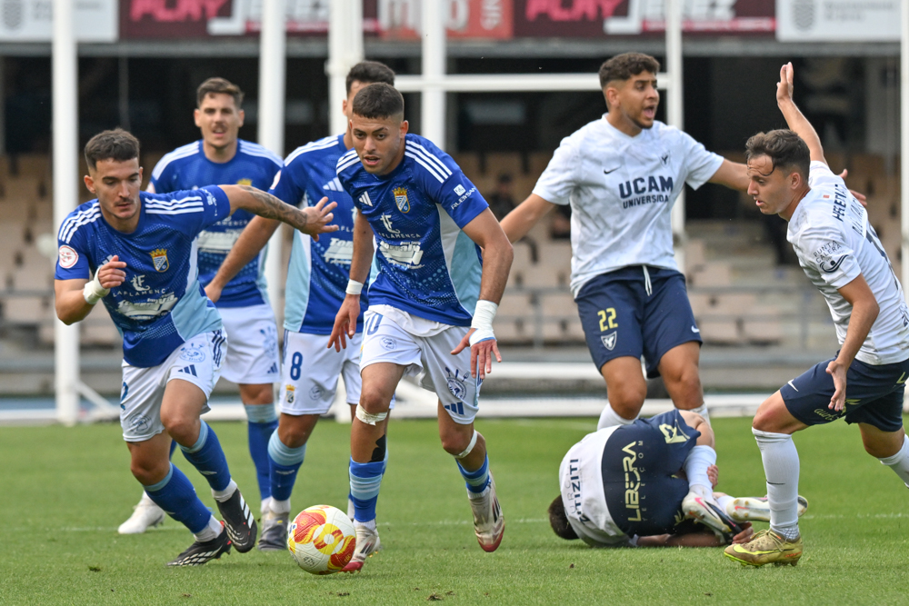

Charaf, candid at his UCAM Murcia unveiling: "I was waiting for the call from Xerez and it never came"

Foto: PuroXerecismoThe Sevillian midfielder admits he wanted to stay at the Xerez side, but Checa's offer, his former coach, made him change plans without hesitation.
UCAM Murcia unveiled Charaf Taoualy as their new signing for the 2026/27 season, and the Sevillian attacking midfielder did not hide the details of a farewell that, until now, had left more questions than answers. After ending two and a half seasons at Xerez CD in June, where he bid farewell to the club with an emotional message on social media, Charaf explained the real reasons behind his departure at his presentation as a university-club player.
In his own words, the player did not immediately consider his Xerez chapter closed: "I was waiting for the call from Xerez, I wanted to wait for Xerez," he admitted, surprising those present by revealing that his initial intention was to stay with the club. However, that call never came. "The call didn't happen," the midfielder concluded, explaining why he ultimately decided not to continue with a project in which he had been a key piece, even serving as captain at times last season.
The player, who left Xerez CD "with the peace of mind of having given everything for the badge," has now found the competitive continuity he was looking for in Murcia, alongside a familiar face. It was precisely the call from Checa, Xerez CD's former coach and now UCAM Murcia's manager until 2028, that proved decisive. The two worked together on the Xerez bench during the winter transfer window of the 2023/24 season, a spell in which Charaf produced, by his own admission, some of his best form and was a key piece in the team's promotion to Segunda Federación.
"He's one of the best coaches I've had," Charaf said of Checa, explaining that as soon as he received his call he didn't think twice about heading to Murcia. The reunion between the two comes just weeks after Checa was announced as the university club's new manager, in a move Murcia billed as a quality addition to their midfield, highlighting the Sevillian player's ability to unbalance defences, his good touch on the ball, and his runs from deep.
With this move, UCAM Murcia confirm their bet on a player who knows his new coach's methods inside out, while Xerez CD lose one of the players most loved by their fans in recent seasons — a farewell that, judging by Charaf's comments, could have been avoided with a simple phone call.
← Back to home